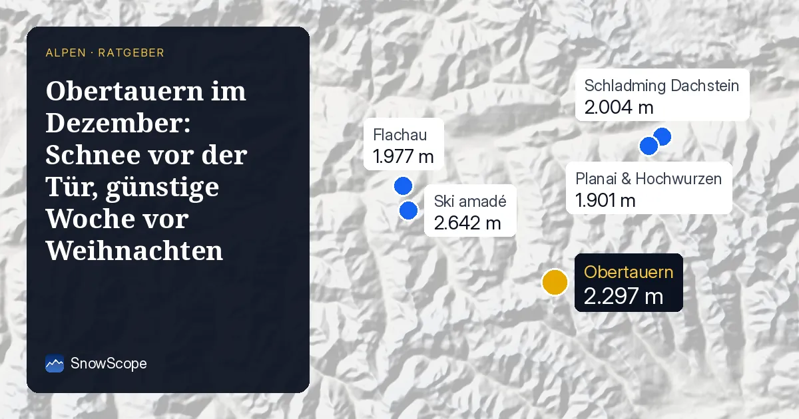

Obertauern im Dezember: Schnee vor der Tür, günstige Woche vor Weihnachten
Der tiefste Lift in Obertauern startet auf 1628 m – der ganze Ort liegt dort, wo im Dezember meist Schnee liegt. In unserer Schneehistorie über 46 Winter hatte die Mittelstation in der Woche vom 15. bis 21. Dezember in 80 % der Winter 30 cm oder mehr, und der 6-Tage-Skipass kostet bis 25. Dezember 331 EUR statt 368 EUR.
Die Live-Schneeprognose für Obertauern in der SnowScope-AppSchneehöhen, Pulverschnee-Alarme und 3D-Karte, gratis.
Das Urteil in Kürze
Wer im Dezember günstig in Österreich Ski fahren will, ohne ein Gletscherticket zu zahlen, landet schnell in Obertauern. Das Skigebiet reicht von 1628 m bis 2297 m, mit 87 km kartierten Pisten und 28 Liften – kein einziger Hang im Talboden, der Glück braucht.
Der Haken ist ehrlich und einfach: Anfang Dezember ist noch nicht sicher. In der ersten Monatswoche hatte nur gut die Hälfte unserer Winter (57 %) 30 cm an der Mittelstation. Wer die zweite Monatshälfte bucht, hat deutlich bessere Karten.


Dezember, Woche für Woche
An der Mittelstation (1962 m) steigt der Anteil der Winter mit mindestens 30 cm durch den Monat: 57 % vom 1. bis 7. Dezember, 65 % vom 8. bis 14., 80 % vom 15. bis 21. und 85 % in der Weihnachtswoche. Am Gipfel (2297 m) sind es in denselben Wochen 76, 80, 85 und 91 %.
Die typische Schneehöhe an der Mittelstation wächst von 34 cm am 1. Dezember auf 43 cm am 15. Dezember und 62 cm am 31. Dezember. In einem mageren Jahr (1 Winter von 10) liegen am 15. Dezember nur 17 cm, in einem starken 86 cm. In keinem unserer 46 Winter war der Boden im Ort am 15. Dezember aper.
Eine Warnung aus dem langen Blick: Das Dezembermittel an der Mittelstation ist von 46 cm in den ersten 15 Wintern auf 38 cm in den letzten 15 gefallen, und im letzten Winter lagen dort am 15. Dezember nur 18 cm.
Was der Skipass kostet
Die offizielle Preisliste 2026-27 von Obertauern kennt zwei Saisonzeiten. Die Tageskarte kostet in beiden 72 EUR. Gespart wird bei Mehrtageskarten: 6 Tage kosten 331 EUR in der Saison B vom 20. November bis 25. Dezember, gegenüber 368 EUR in der Hauptsaison.
Eine Woche, die vor Weihnachten endet, zahlt also beim Skipass den niedrigeren Preis der Saison B – gleiche Lifte und in den meisten Wintern genug Schnee.
Im Vergleich zum Kitzsteinhorn
Das Kitzsteinhorn über Kaprun ist die klassische Dezember-Antwort: ein Gletscher mit 137 cm am Gipfel an einem typischen 15. Dezember. Der tiefste Lift liegt aber auf 765 m, wo ein typischer 15. Dezember 6 cm bringt, und die Mittelstation (1894 m) ähnelt Obertauern: 40 cm und 76 % der Winter mit 30 cm in der Woche vom 15. bis 21. Dezember.
Beim Geld ist es klar. Ein 6-Tage-Skipass am Kitzsteinhorn kostet in der Vorsaison 396 EUR und in der Hauptsaison 440 EUR. Die Vorweihnachtswoche in Obertauern ist günstiger, und du fährst direkt vom Hotel weg.
Für wen sich das lohnt
Für Familien und gute Genussfahrer, die im Dezember Ski-in, Ski-out und eine kleinere Rechnung wollen. Wer tiefen Schnee braucht, wartet besser auf die Weihnachtswoche – da hatten 41 % unserer Winter 60 cm oder mehr an der Mittelstation – oder sucht höher.
Tipps für Skifahrer
- Nimm den 15. bis 21. Dezember oder später: Die Chance auf 30 cm an der Mittelstation steigt von 57 % auf 80 % im Vergleich zur ersten Woche.
- Lass den 6-Tage-Skipass spätestens am 25. Dezember enden, dann bleibst du in der günstigeren Saison B (331 EUR statt 368 EUR).
- Schau eine Woche vor der Abreise auf die Schneekarte – der letzte Winter zeigt, dass ein magerer Dezember vorkommt.
- Abseits der Piste nach Neuschnee: jeden Morgen den Lawinenlagebericht Salzburg lesen.
Weitere Karten (externe Seiten)
Quellen und Nachweise
- Obertauern: official lift-pass prices (2026-27), checked 13 November 2026 www.ski-obertauern.at/en/ski-pass/ski-pass-prices
- Kitzsteinhorn (Kaprun): official lift-pass prices (2026-27), checked 13 November 2026 www.kitzsteinhorn.at/en/tickets-prices/ski-board
Zu diesen Zahlen
Schneewerte: SnowScope-Schneehistorie, 46 vergangene Winter (1980-81 bis 2025-26) auf den Höhen des Skigebiets, höhenkorrigiert (eine Schätzung für eine Fläche, keine Meldungen des Skigebiets); „guter Schnee“ = im Wochenmittel 30 cm oder mehr am Boden. Karte: unsere übliche Schneehöhe am 15. Dezember, nach Höhe auf das Gelände verteilt. Pisten und Lifte: OpenSkiMap-Kartierung. Skipasspreise: offizielle Preislisten der Skigebiete, geprüft am 13. November 2026; Preise können sich ändern.
Offizielle Lawinenlageberichte: Lawinenwarndienst Salzburg
Diesen Bericht zitieren
Für Forschung, Lehre oder Presse: Zahlen und Grafiken sind unter CC BY 4.0 mit dieser Quellenangabe frei nutzbar.
SnowScope (2026), Obertauern im Dezember: Schnee vor der Tür, günstige Woche vor Weihnachten, https://snowscope.app/blog/de/2026/11/obertauern-december-skiing-cheap-snow-sure-pre-christmas.html, abgerufen am 2026-11-14
SnowScope (Atlas Labs). (2026, November 14). Obertauern im Dezember: Schnee vor der Tür, günstige Woche vor Weihnachten. SnowScope snow reports. https://snowscope.app/blog/de/2026/11/obertauern-december-skiing-cheap-snow-sure-pre-christmas.html
BibTeX
@misc{snowscope2026obertauerndecemberskiing,
author = {{SnowScope (Atlas Labs)}},
title = {Obertauern im Dezember: Schnee vor der Tür, günstige Woche vor Weihnachten},
year = {2026},
month = nov,
howpublished = {\url{https://snowscope.app/blog/de/2026/11/obertauern-december-skiing-cheap-snow-sure-pre-christmas.html}},
note = {Published 2026-11-14 13:29 UTC; accessed 2026-11-14}
}· CC BY 4.0 · Methoden, Daten und Werkzeuge →
Obertauern: Schnee und Temperatur nach Höhe, dieser Winter vs letzter (Werkzeuge) →
Obertauern folgen
Gratis: eine Nachricht, wenn Neuschnee kommt, und jeden Morgen die Vorhersage.